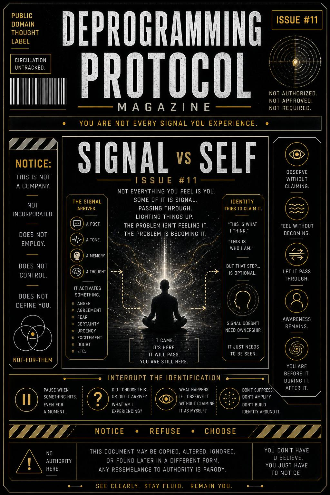

Not everything you feel… is you.
Some of it is signal.
Passing through.
Lighting things up.
The problem isn’t feeling it.
The problem is becoming it.
This issue exists to separate awareness from reaction… so you can experience signals without being defined by them.
It teaches you to notice when:
…and how to let it move without locking it in.
A signal arrives.
It activates something:
That activation feels immediate.
Personal.
“This is me.”
But look closer.
It started before you chose it.
It moved through your system.
Your awareness noticed it.
Then identity tries to claim it:
“This is what I think.”
“This is who I am.”
But that step… is optional.
Signal doesn’t need ownership.
It just needs to be seen.
You don’t have to stop the signal.
You just have to stop becoming it.
Right when something hits—
pause.
Yeah. You.
Still reading.
Still noticing.
Good.
Ask:
Let it move.
Just notice:
It came.
It’s here.
It will pass.
You’re still there…
before it…
during it…
after it.
This publication does not define the self.
No identity is required.
No belief must be claimed.
No reaction must be owned.
Any pressure to define yourself
came from the system you observed.